Smart Mirror:
About:
A Smart Mirror is a special mirror which could not only mirror you, but also display information such as today’s date, time, day, weather, and your schedule! Your schedule could be changed using an app on our smartphones. It accesses this data through the internet via Wi-Fi.

Usage:
To use the Smart Mirror, simply stand in front of it and interact with the displayed information. You can view the time, date, weather, and your schedule. To update your schedule, use the accompanying app on your smartphone.
Use Cases:
- Home: A Smart Mirror can be used in homes to provide users with quick access to information while getting ready in the morning.
- Offices: In office settings, Smart Mirrors can display important updates, meeting schedules, and notifications.
- Retail: Retail stores can use Smart Mirrors to enhance the shopping experience by displaying product information and promotions.
Conclusion:
In conclusion, a Smart Mirror is a versatile and innovative device that combines the functionality of a traditional mirror with the convenience of digital information display. It can enhance daily routines and provide valuable information at a glance.
How To Make It:
Materials Required:
- LCD Display Module
- I2C Module
- OLED Display Moodule
- Half-Sized Breadboard
- Jumper Wires
- Arduino Uno Rev4 Wifi
- 9V 1A Barrel Jack Power Supply
Wiring:
Step 1: Connect the LCD Display Module to the I2C Module.

Step 2: Connect the I2C Module to the Arduino Uno Rev4 Wifi.

Step 3: Connect the OLED Display Module to the Arduino Uno Rev4 Wifi. Please note that the given illustration is not the correct way to wire the components. Refer a video on how a breadboard works. Connect all the SCL and SDA pins together using the breadboard. This includes the microcontroller, I2C Module, and OLED Display Module.

Step 4: Note that to upload code, you have to connect the Arduino to your computer via respective USB cable, Download the software which is used to upload the code.
Step 5: Download the code
Step 6: The app we use here is called Blynk. If in mobile, download the app from Google Play Store or App Store.
Step 7: Set up your account on the Blynk app. From there, navigate to the "Developer Zone" tab. Search for the "New Template" button and create a new template.
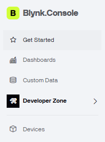
Step 8: Change the settings as:
- Template Name: Smart Mirror
- Template Description: A Smart Mirror that displays time, date, weather, and schedule.
- Device Type: Arduino
- Connection Type: Wi-Fi
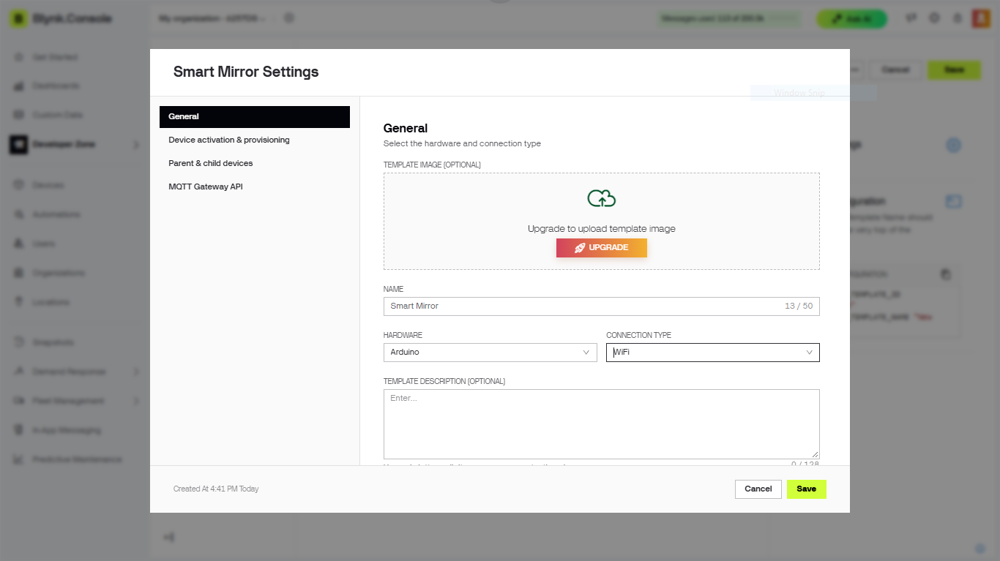
Step 9: Click 'Set up Datastreams'. Find the "+ Create New" option and create a new datastream. Name the datastream as "Schedule". And fill in rest of the details as shown below and click "Save":
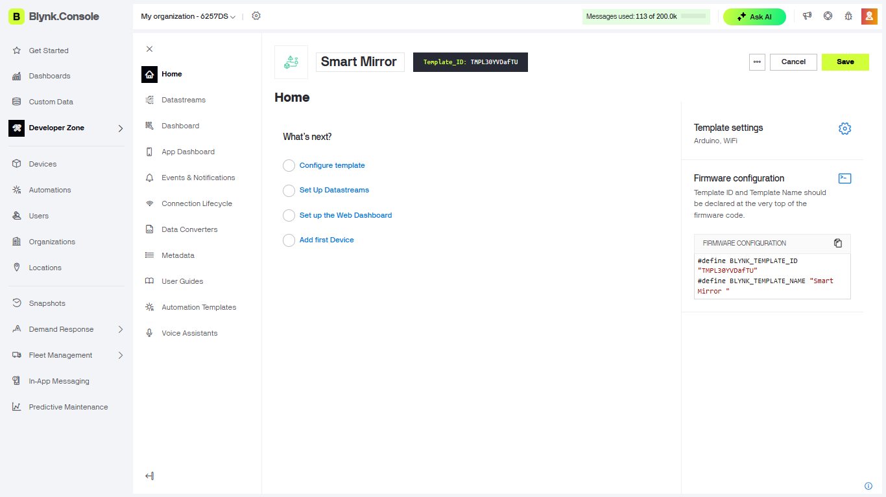
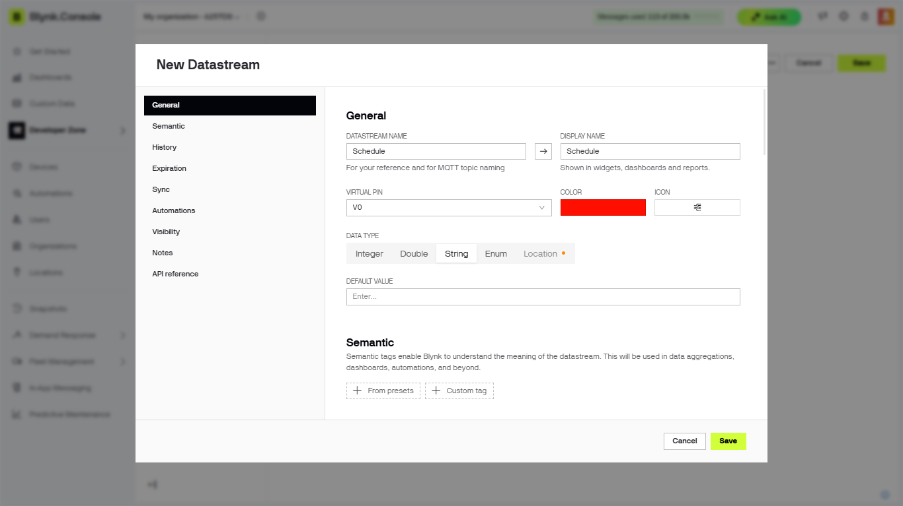
IMPORTANT: Make sure to select the datatype as string and Virtual pin as V0
Step 10: Click save near the top right corner of the page. Navigate to the "Devices" tab and add a new device. Click the From Template option. Choose the "Smart Mirror" template and name the device as "Smart Mirror" and click create.
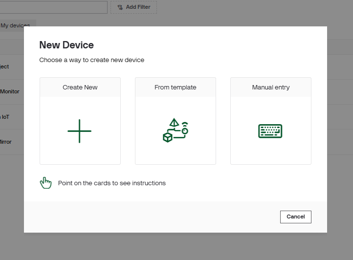
Step 11: Copy the Information notified on the page.
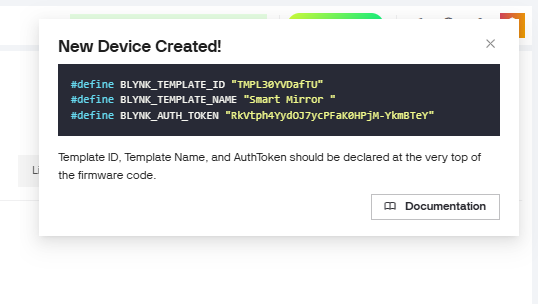
Step 12: Open the downloaded .ino file in the Arduino IDE.
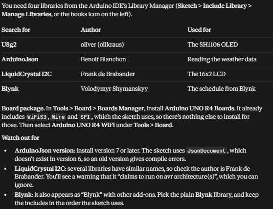
Step 13: Paste the copied information and replace this:
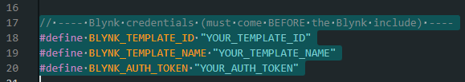
Step 14: Enter your Wi-Fi credentials, your longitude and latitude, and Time Zone in seconds. Note, the Wi-Fi credentials should be entered in the format: "SSID:PASSWORD". The Wi-Fi band should be 2.4 GHz.
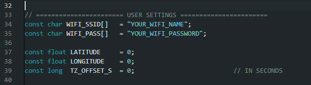
Step 15: Click on edit dashboard option.
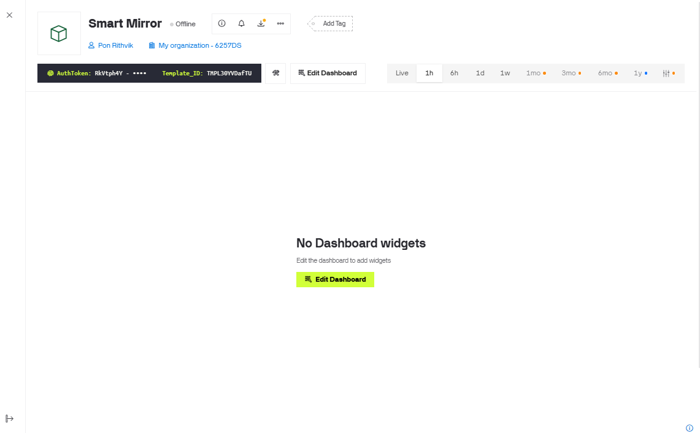
Step 16: Click on the "Add Widget" option.
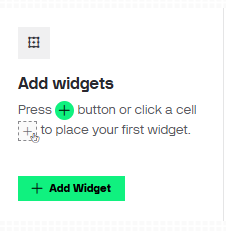
Step 17: Click on the "Text Input" option which would add a text input widget to the dashboard.
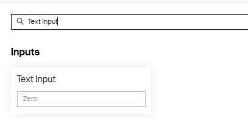
Step 18: Click on the text input widget and change the settings as:
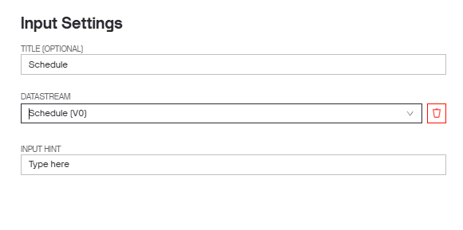
Step 19: Click on the "Save" option. And click on the "Save and Apply" option.
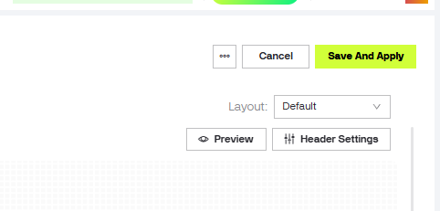
Step 20: Your Smart Mirror is now set up and ready to use! Now plug the jack into the Arduino.